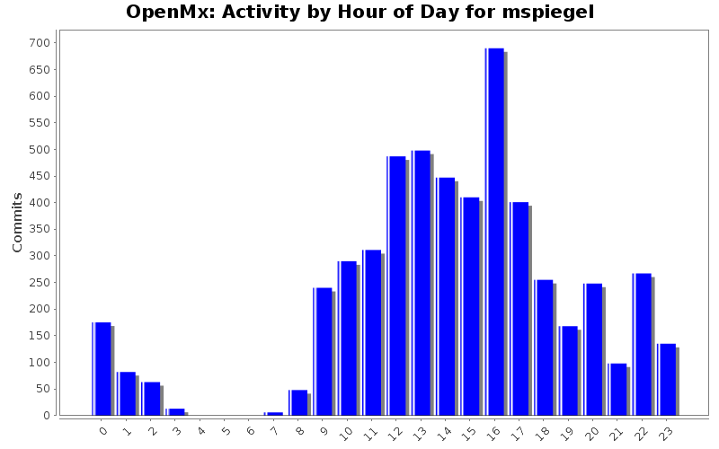
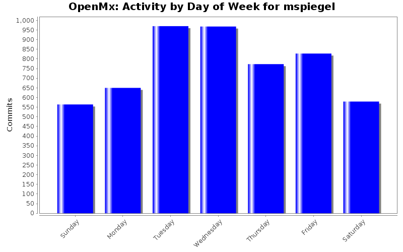
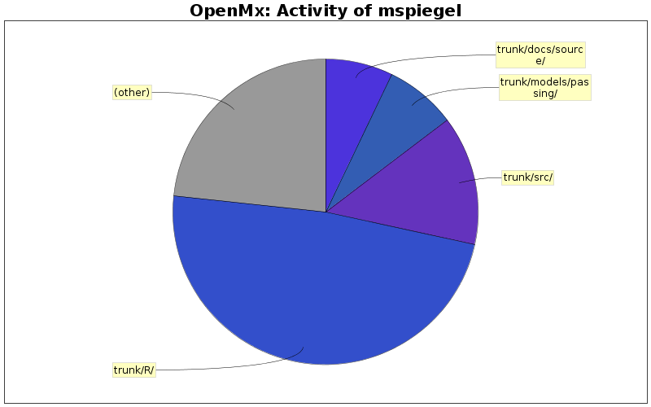

| Directory | Changes | Lines of Code | Lines per Change |
|---|---|---|---|
| Totals | 5332 (100.0%) | 97463 (100.0%) | 18.2 |
| trunk/R/ | 1910 (35.8%) | 47017 (48.2%) | 24.6 |
| trunk/src/ | 691 (13.0%) | 13404 (13.8%) | 19.3 |
| trunk/models/passing/ | 566 (10.6%) | 7356 (7.5%) | 12.9 |
| trunk/docs/source/ | 264 (5.0%) | 6974 (7.2%) | 26.4 |
| trunk/models/nightly/ | 105 (2.0%) | 4842 (5.0%) | 46.1 |
| trunk/man/ | 419 (7.9%) | 3993 (4.1%) | 9.5 |
| trunk/demo/ | 456 (8.6%) | 3708 (3.8%) | 8.1 |
| trunk/models/failing/ | 186 (3.5%) | 2406 (2.5%) | 12.9 |
| trunk/inst/antlr/ | 13 (0.2%) | 1937 (2.0%) | 149.0 |
| trunk/inst/tools/ | 68 (1.3%) | 1825 (1.9%) | 26.8 |
| trunk/ | 509 (9.5%) | 1811 (1.9%) | 3.5 |
| trunk/models/nightly/data/ | 2 (0.0%) | 1002 (1.0%) | 501.0 |
| trunk/models/enormous/ | 4 (0.1%) | 457 (0.5%) | 114.2 |
| trunk/models/enourmous/ | 8 (0.2%) | 342 (0.4%) | 42.7 |
| trunk/models/passing/mx-scripts/ | 16 (0.3%) | 282 (0.3%) | 17.6 |
| trunk/inst/ | 5 (0.1%) | 69 (0.1%) | 13.8 |
| trunk/tests/ | 6 (0.1%) | 11 (0.0%) | 1.8 |
| trunk/demo/ExamplesH/ | 9 (0.2%) | 7 (0.0%) | 0.7 |
| trunk/support/ | 4 (0.1%) | 4 (0.0%) | 1.0 |
| trunk/inst/windows/ | 2 (0.0%) | 4 (0.0%) | 2.0 |
| trunk/inst/testsuite/ | 3 (0.1%) | 4 (0.0%) | 1.3 |
| trunk/swift/demo/ | 2 (0.0%) | 3 (0.0%) | 1.5 |
| trunk/models/failing/mx-scripts/ | 1 (0.0%) | 2 (0.0%) | 2.0 |
| trunk/build/ | 2 (0.0%) | 2 (0.0%) | 1.0 |
| trunk/swift/demo/scripts/ | 1 (0.0%) | 1 (0.0%) | 1.0 |
| trunk/inst/npsol/windows/x86/rtools2.13/ | 1 (0.0%) | 0 (0.0%) | 0.0 |
| trunk/inst/npsol/windows/x86/rtools2.12/ | 2 (0.0%) | 0 (0.0%) | 0.0 |
| trunk/inst/npsol/windows/x86/rtools2.10/ | 1 (0.0%) | 0 (0.0%) | 0.0 |
| trunk/inst/npsol/osx/x86ppc/ | 2 (0.0%) | 0 (0.0%) | 0.0 |
| trunk/inst/npsol/osx/ | 8 (0.2%) | 0 (0.0%) | 0.0 |
| trunk/inst/npsol/linux/x86_64/gcc4.6/ | 1 (0.0%) | 0 (0.0%) | 0.0 |
| trunk/inst/npsol/linux/x86_64/gcc4.5/ | 1 (0.0%) | 0 (0.0%) | 0.0 |
| trunk/inst/npsol/linux/x86_64/gcc4.4/ | 3 (0.1%) | 0 (0.0%) | 0.0 |
| trunk/inst/npsol/linux/x86_64/gcc4.3/ | 1 (0.0%) | 0 (0.0%) | 0.0 |
| trunk/inst/npsol/linux/x86_64/gcc4.2/ | 1 (0.0%) | 0 (0.0%) | 0.0 |
| trunk/inst/npsol/linux/x86_64/gcc4.1/ | 1 (0.0%) | 0 (0.0%) | 0.0 |
| trunk/inst/npsol/linux/x86_64/gcc3.9/ | 1 (0.0%) | 0 (0.0%) | 0.0 |
| trunk/inst/npsol/linux/x86_64/ | 8 (0.2%) | 0 (0.0%) | 0.0 |
| trunk/inst/npsol/linux/x86/gcc4.6/ | 1 (0.0%) | 0 (0.0%) | 0.0 |
| trunk/inst/npsol/linux/x86/gcc4.5/ | 1 (0.0%) | 0 (0.0%) | 0.0 |
| trunk/inst/npsol/linux/x86/gcc4.4/ | 1 (0.0%) | 0 (0.0%) | 0.0 |
| trunk/inst/npsol/linux/x86/gcc4.3/ | 1 (0.0%) | 0 (0.0%) | 0.0 |
| trunk/inst/npsol/linux/x86/gcc4.1/ | 1 (0.0%) | 0 (0.0%) | 0.0 |
| trunk/inst/npsol/linux/x86/gcc3.9/ | 1 (0.0%) | 0 (0.0%) | 0.0 |
| trunk/inst/npsol/linux/x86/ | 4 (0.1%) | 0 (0.0%) | 0.0 |
| trunk/inst/npsol/linux/ | 7 (0.1%) | 0 (0.0%) | 0.0 |
| trunk/inst/npsol/ | 2 (0.0%) | 0 (0.0%) | 0.0 |
| trunk/docs/source/graph/ | 22 (0.4%) | 0 (0.0%) | 0.0 |
| trunk/demo/MxR/ | 2 (0.0%) | 0 (0.0%) | 0.0 |
| trunk/build-aux/ | 6 (0.1%) | 0 (0.0%) | 0.0 |

Moving NPSOL specific implementation to a separate file.
555 lines of code changed in 6 files:
Eliminating global variables from npsolWrap.c
18 lines of code changed in 3 files:
Renamed global state from "currentState" to "globalState".
In preparation for new optimization libraries.
269 lines of code changed in 5 files:
Improvements to man pages in preparation for 1.3 release.
14 lines of code changed in 3 files:
Fixing bug with 'name' argument to MxModel. See
http://openmx.psyc.virginia.edu/thread/1114#comment-4302
3 lines of code changed in 2 files:
Removing executable property on omxLISRELObjective.[ch]
0 lines of code changed in 2 files:
More small improvements to LISREL objective function.
6 lines of code changed in 1 file:
Small performance improvements to LISREL objective.
5 lines of code changed in 2 files:
Added 'fetch' argument to omxGetParameters()
64 lines of code changed in 3 files:
Fixed a bug in the identification of NA definition variables.
3 lines of code changed in 1 file:
Added documentation for omxCbind(), omxRbind(), and omxTranspose()
165 lines of code changed in 60 files:
Added omxCbind(), omxRbind(), and omxTranspose()
124 lines of code changed in 4 files:
Some performance improvements to omxParallelCI() and
to the backend.
39 lines of code changed in 5 files:
New script to performance test suite.
208 lines of code changed in 1 file:
Performance improvements to continuous FIML objective function.
54 lines of code changed in 3 files:
Moving stack allocations onto the heap.
156 lines of code changed in 1 file:
Performance improvements to front end.
16 lines of code changed in 7 files:
Performance improvements to frontend.
10 lines of code changed in 3 files:
Oops. Bugfix so the PPML test cases continue to work.
1 lines of code changed in 1 file:
Performance improvements to mxRun() frontend
133 lines of code changed in 7 files:
(1239 more)